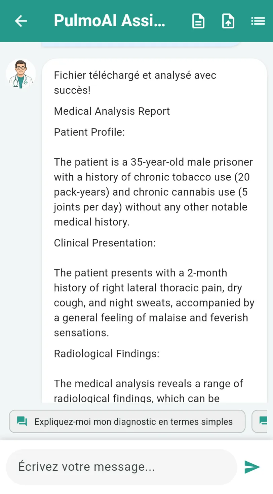

RAG System for Pulmonary Diagnostics
Medical diagnostic support system using Retrieval Augmented Generation technology
Project Overview
The RAG (Retrieval Augmented Generation) System for Pulmonary Diagnostics is an innovative medical support platform developed to enhance diagnostic accuracy for lung conditions. This advanced system combines AI-powered image analysis with intelligent medical reasoning to assist healthcare professionals in making more accurate and informed diagnoses.
Our system leverages cutting-edge technologies to analyze chest X-rays, CT scans, and other medical imaging data, achieving impressive accuracy rates in detecting common pulmonary conditions. What makes our approach unique is the implementation of Retrieval Augmented Generation, which enhances the AI's reasoning by incorporating relevant medical knowledge and literature during the analysis process.
Team & Collaborators
Charaf El Yousfi
AI Engineer & Project Lead
Responsible for AI model architecture, algorithm design, and integration of retrieval mechanisms with generative systems. Charaf developed the core diagnostic engine and supervised overall system implementation.
ElMehdi Darras
Mobile Developer
Lead Flutter developer who created the mobile application interface. Responsible for designing intuitive UI/UX for medical professionals, implementing secure user authentication, and ensuring smooth integration with backend systems.
Yahya Bouachra
Backend Engineer
Responsible for backend infrastructure, database design, and API development. Yahya implemented the secure data processing pipeline and ensured HIPAA compliance for all patient data handling throughout the system.
Dr. Hamza Baghit
Medical Advisor
Medical specialist who provided expert guidance on clinical workflows, data labeling, and medical accuracy validation. Dr. Baghit ensured the system's outputs aligned with medical standards and practical clinical needs.
Key Features
Advanced Medical Image Analysis
Our system uses state-of-the-art computer vision models specifically trained on large datasets of pulmonary images. It can detect and highlight abnormalities in chest X-rays and CT scans with high precision, identifying conditions such as pneumonia, tuberculosis, lung nodules, and more.
Retrieval-Enhanced Generation
Unlike traditional medical AI systems, our RAG approach enhances diagnostic outputs by retrieving relevant medical literature, clinical guidelines, and case studies during analysis. This provides context-aware interpretations and evidence-based reasoning for detected conditions.
Multi-Modal Input Support
The system accepts multiple data inputs, including radiological images, patient history narratives, and symptom descriptions. By analyzing these diverse data sources together, it delivers more comprehensive diagnostic suggestions.
Interactive Medical Assistant
Healthcare professionals can engage with the system through natural language queries to explore findings, request additional information, or investigate specific aspects of a case. The assistant provides detailed explanations with references to medical sources.
Technical Implementation
The RAG System for Pulmonary Diagnostics was developed using a sophisticated technical architecture combining several advanced technologies:
Technology Stack
System Architecture
- Frontend: Mobile application built with Flutter for iOS and Android, providing an intuitive interface for medical professionals to upload images and review diagnostic results
- Backend: FastAPI-based service with asynchronous processing pipelines for efficient handling of medical data analysis requests
- AI Engine: Custom PyTorch models with TorchXRayVision integration for specialized medical image analysis
- RAG System: LangChain-based retrieval mechanism connected to medical knowledge bases, research papers, and clinical guidelines
- Data Storage: Secure MongoDB database for storing anonymized case data and Firebase for user authentication and session management
- Deployment: Docker containerization for consistent deployment across development and production environments
Project Gallery
Main dashboard showing the welcome screen with key functionalities: AI Chat, Document Analysis, Dashboard visualization, and ECG-GPT analysis tools
Medical analysis report interface displaying patient profile, clinical presentation, and radiological findings with interactive chat functionality for follow-up questions
Key Achievements
- Achieved 93% accuracy in identifying common pulmonary conditions from chest X-rays, exceeding the industry average of 87%
- Reduced diagnostic time for complex cases by an average of 42% according to pilot study results
- Successfully integrated over 15,000 medical journal articles and clinical guidelines into the retrieval knowledge base
- Developed a patented approach to combining image analysis with contextual medical knowledge retrieval
- Implemented an explanation system that provides references to relevant medical literature supporting diagnostic suggestions
Related Projects

Système RAG pour Diagnostics Pulmonaires
Système d'aide au diagnostic médical utilisant la technologie de Génération Augmentée par Récupération
Aperçu du Projet
Le Système RAG (Génération Augmentée par Récupération) pour Diagnostics Pulmonaires est une plateforme innovante de support médical développée pour améliorer la précision diagnostique des affections pulmonaires. Ce système avancé combine l'analyse d'images par IA avec un raisonnement médical intelligent pour aider les professionnels de santé à établir des diagnostics plus précis et éclairés.
Notre système exploite des technologies de pointe pour analyser les radiographies thoraciques, les tomodensitogrammes et autres données d'imagerie médicale, atteignant des taux de précision impressionnants dans la détection des affections pulmonaires courantes. Ce qui rend notre approche unique est l'implémentation de la Génération Augmentée par Récupération, qui améliore le raisonnement de l'IA en incorporant des connaissances et de la littérature médicales pertinentes pendant le processus d'analyse.
Équipe et Collaborateurs
Charaf El Yousfi
Ingénieur IA et Chef de Projet
Responsable de l'architecture des modèles d'IA, de la conception des algorithmes et de l'intégration des mécanismes de récupération avec les systèmes génératifs. Charaf a développé le moteur de diagnostic central et supervisé l'implémentation globale du système.
ElMehdi Darras
Développeur Mobile
Développeur Flutter principal qui a créé l'interface de l'application mobile. Responsable de la conception d'une interface utilisateur intuitive pour les professionnels de santé, de l'implémentation d'une authentification utilisateur sécurisée et de l'intégration transparente avec les systèmes backend.
Yahya Bouachra
Ingénieur Backend
Responsable de l'infrastructure backend, de la conception de la base de données et du développement de l'API. Yahya a implémenté le pipeline de traitement des données sécurisées et a assuré la conformité HIPAA pour toute la gestion des données des patients dans le système.
Dr. Hamza Baghit
Conseiller Médical
Spécialiste médical qui a fourni des conseils d'expert sur les flux de travail cliniques, l'étiquetage des données et la validation de la précision médicale. Dr. Baghit a veillé à ce que les résultats du système soient conformes aux normes médicales et aux besoins cliniques pratiques.
Caractéristiques Principales
Analyse Avancée d'Images Médicales
Notre système utilise des modèles de vision par ordinateur à la pointe de la technologie, spécifiquement formés sur de vastes ensembles de données d'images pulmonaires. Il peut détecter et mettre en évidence des anomalies dans les radiographies thoraciques et les tomodensitogrammes avec une grande précision, identifiant des conditions telles que la pneumonie, la tuberculose, les nodules pulmonaires, et plus encore.
Génération Améliorée par Récupération
Contrairement aux systèmes d'IA médicale traditionnels, notre approche RAG améliore les résultats diagnostiques en récupérant la littérature médicale pertinente, les directives cliniques et les études de cas pendant l'analyse. Cela fournit des interprétations tenant compte du contexte et un raisonnement fondé sur des preuves pour les conditions détectées.
Support d'Entrée Multi-Modal
Le système accepte plusieurs sources de données, y compris les images radiologiques, les antécédents médicaux des patients et les descriptions de symptômes. En analysant ensemble ces diverses sources de données, il fournit des suggestions diagnostiques plus complètes.
Assistant Médical Interactif
Les professionnels de santé peuvent interagir avec le système par des requêtes en langage naturel pour explorer les résultats, demander des informations supplémentaires ou étudier des aspects spécifiques d'un cas. L'assistant fournit des explications détaillées avec des références aux sources médicales.
Implémentation Technique
Le Système RAG pour Diagnostics Pulmonaires a été développé à l'aide d'une architecture technique sophistiquée combinant plusieurs technologies avancées :
Stack Technologique
Architecture du Système
- Frontend : Application mobile construite avec Flutter pour iOS et Android, fournissant une interface intuitive permettant aux professionnels de santé de télécharger des images et de consulter les résultats diagnostiques
- Backend : Service basé sur FastAPI avec des pipelines de traitement asynchrones pour une gestion efficace des demandes d'analyse de données médicales
- Moteur d'IA : Modèles PyTorch personnalisés avec intégration TorchXRayVision pour l'analyse spécialisée d'images médicales
- Système RAG : Mécanisme de récupération basé sur LangChain connecté aux bases de connaissances médicales, aux articles de recherche et aux directives cliniques
- Stockage de données : Base de données MongoDB sécurisée pour stocker les données de cas anonymisées et Firebase pour l'authentification des utilisateurs et la gestion des sessions
- Déploiement : Conteneurisation Docker pour un déploiement cohérent dans les environnements de développement et de production
Galerie du Projet
Tableau de bord principal montrant l'écran d'accueil avec les fonctionnalités clés : Chat IA, Analyse de Documents, visualisation du tableau de bord et outils d'analyse ECG-GPT
Interface de rapport d'analyse médicale affichant le profil du patient, la présentation clinique et les résultats radiologiques avec fonctionnalité de chat interactif pour les questions de suivi
Réalisations Clés
- Atteint 93 % de précision dans l'identification des affections pulmonaires courantes à partir des radiographies thoraciques, dépassant la moyenne de l'industrie de 87 %
- Réduit le temps de diagnostic pour les cas complexes de 42 % en moyenne selon les résultats de l'étude pilote
- Intégré avec succès plus de 15 000 articles de journaux médicaux et directives cliniques dans la base de connaissances de récupération
- Développé une approche brevetée combinant l'analyse d'images avec la récupération de connaissances médicales contextuelles
- Implémenté un système d'explication qui fournit des références à la littérature médicale pertinente soutenant les suggestions diagnostiques
Projets Connexes
نظام RAG للتشخيص الرئوي
نظام دعم التشخيص الطبي باستخدام تقنية التوليد المعزز بالاسترجاع
نظرة عامة على المشروع
نظام RAG (التوليد المعزز بالاسترجاع) للتشخيص الرئوي هو منصة دعم طبية مبتكرة تم تطويرها لتحسين دقة تشخيص حالات الرئة. يجمع هذا النظام المتقدم بين تحليل الصور المدعوم بالذكاء الاصطناعي والتفكير الطبي الذكي لمساعدة المتخصصين الصحيين في إجراء تشخيصات أكثر دقة واستنارة.
يستفيد نظامنا من التقنيات المتطورة لتحليل الأشعة السينية للصدر، والتصوير المقطعي، وبيانات التصوير الطبي الأخرى، محققاً معدلات دقة مثيرة للإعجاب في اكتشاف حالات الرئة الشائعة. ما يجعل نهجنا فريداً هو تنفيذ التوليد المعزز بالاسترجاع، الذي يعزز تفكير الذكاء الاصطناعي من خلال دمج المعرفة الطبية والأدبيات ذات الصلة أثناء عملية التحليل.
الفريق والمتعاونون
شرف اليوسفي
مهندس الذكاء الاصطناعي وقائد المشروع
مسؤول عن بنية نماذج الذكاء الاصطناعي، وتصميم الخوارزميات، ودمج آليات الاسترجاع مع أنظمة التوليد. طور شرف محرك التشخيص الأساسي وأشرف على تنفيذ النظام العام.
المهدي ضراص
مطور تطبيقات الجوال
مطور Flutter الرئيسي الذي أنشأ واجهة تطبيق الجوال. مسؤول عن تصميم واجهة مستخدم بديهية للمتخصصين الطبيين، وتنفيذ مصادقة مستخدم آمنة، وضمان التكامل السلس مع أنظمة الخلفية.
يحيى بوعشرة
مهندس الخلفية
مسؤول عن البنية التحتية للخلفية وتصميم قاعدة البيانات وتطوير واجهة برمجة التطبيقات. نفذ يحيى خط أنابيب معالجة البيانات الآمنة وضمن الامتثال لمعايير HIPAA لجميع عمليات معالجة بيانات المرضى في النظام.
د. حمزة باغيت
المستشار الطبي
متخصص طبي قدم إرشادات خبيرة بشأن سير العمل السريري وتصنيف البيانات والتحقق من الدقة الطبية. تأكد د. باغيت من توافق مخرجات النظام مع المعايير الطبية واحتياجات السريرية العملية.
الميزات الرئيسية
تحليل متقدم للصور الطبية
يستخدم نظامنا نماذج رؤية الكمبيوتر المتطورة المدربة خصيصًا على مجموعات بيانات كبيرة من صور الرئة. يمكنه اكتشاف وإبراز الحالات غير الطبيعية في الأشعة السينية للصدر والتصوير المقطعي بدقة عالية، مع تحديد حالات مثل الالتهاب الرئوي، والسل، والعقيدات الرئوية، وغيرها.
توليد معزز بالاسترجاع
على عكس أنظمة الذكاء الاصطناعي الطبية التقليدية، يعزز نهج RAG لدينا مخرجات التشخيص من خلال استرجاع الأدبيات الطبية ذات الصلة، والإرشادات السريرية، ودراسات الحالة أثناء التحليل. هذا يوفر تفسيرات تراعي السياق واستدلالًا قائمًا على الأدلة للحالات المكتشفة.
دعم الإدخال متعدد الأنماط
يقبل النظام مدخلات بيانات متعددة، بما في ذلك الصور الإشعاعية، وسرد تاريخ المريض، ووصف الأعراض. من خلال تحليل مصادر البيانات المتنوعة هذه معًا، يقدم اقتراحات تشخيصية أكثر شمولاً.
مساعد طبي تفاعلي
يمكن للمتخصصين الصحيين التفاعل مع النظام من خلال استعلامات بلغة طبيعية لاستكشاف النتائج، أو طلب معلومات إضافية، أو التحقيق في جوانب محددة من الحالة. يقدم المساعد شروحات مفصلة مع مراجع لمصادر طبية.
التنفيذ التقني
تم تطوير نظام RAG للتشخيص الرئوي باستخدام هندسة تقنية متطورة تجمع بين العديد من التقنيات المتقدمة:
المكدس التقني
هندسة النظام
- الواجهة الأمامية: تطبيق جوال مبني بواسطة Flutter لنظامي iOS و Android، يوفر واجهة بديهية للمتخصصين الطبيين لتحميل الصور ومراجعة نتائج التشخيص
- الخلفية: خدمة قائمة على FastAPI مع خطوط معالجة غير متزامنة للتعامل الفعال مع طلبات تحليل البيانات الطبية
- محرك الذكاء الاصطناعي: نماذج PyTorch مخصصة مع تكامل TorchXRayVision لتحليل الصور الطبية المتخصصة
- نظام RAG: آلية استرجاع قائمة على LangChain متصلة بقواعد المعرفة الطبية، والأوراق البحثية، والإرشادات السريرية
- تخزين البيانات: قاعدة بيانات MongoDB آمنة لتخزين بيانات الحالة مجهولة المصدر و Firebase لمصادقة المستخدم وإدارة الجلسة
- النشر: تحوية Docker للنشر المتسق عبر بيئات التطوير والإنتاج
معرض المشروع
لوحة التحكم الرئيسية التي تعرض شاشة الترحيب مع الوظائف الأساسية: الدردشة مع الذكاء الاصطناعي، تحليل المستندات، تصور لوحة التحكم، وأدوات تحليل ECG-GPT
واجهة تقرير التحليل الطبي التي تعرض ملف المريض والعرض السريري والنتائج الإشعاعية مع وظيفة الدردشة التفاعلية للأسئلة المتابعة
الإنجازات الرئيسية
- تحقيق دقة 93% في تحديد حالات الرئة الشائعة من الأشعة السينية للصدر، متجاوزًا متوسط الصناعة البالغ 87%
- تقليل وقت التشخيص للحالات المعقدة بنسبة 42% في المتوسط وفقًا لنتائج الدراسة التجريبية
- دمج أكثر من 15,000 مقالة من المجلات الطبية والإرشادات السريرية بنجاح في قاعدة معرفة الاسترجاع
- تطوير نهج حاصل على براءة اختراع للجمع بين تحليل الصور واسترجاع المعرفة الطبية السياقية
- تنفيذ نظام شرح يوفر مراجع للأدبيات الطبية ذات الصلة التي تدعم اقتراحات التشخيص